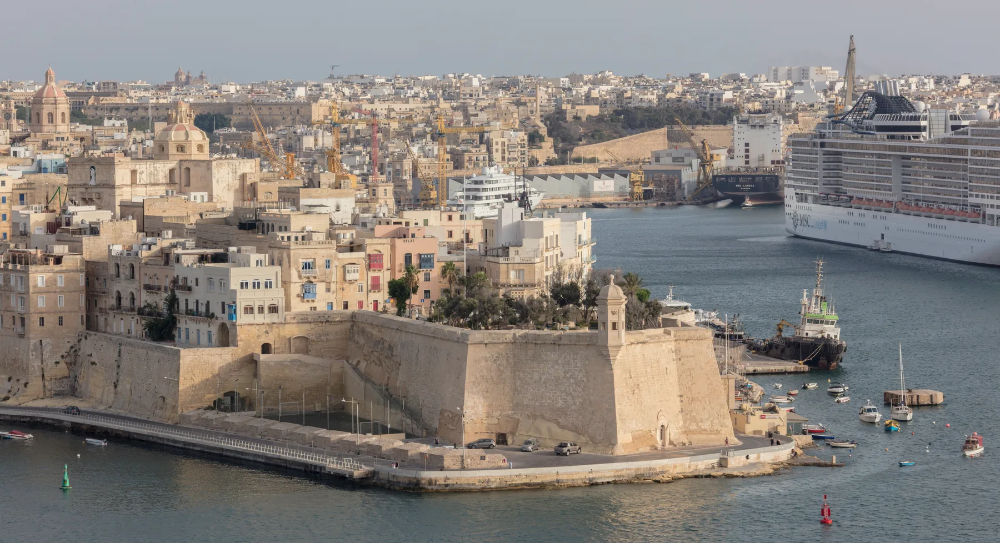

Xatt Juan B. Azopardo
Begin with the marina-facing edge. It is a different address context from the streets above it: check the entrance and street level when arranging a viewing.
Look beyond the harbour panorama. Senglea has a waterfront, a civic spine and a point overlooking a working port. Getting to know it means seeing how those settings connect on land.

L-Isla is a locality and council in its own right. Bormla (Cospicua), Birgu (Vittoriosa) and Kalkara each have their own identity. These four settings help orient a visit within Senglea; they are not administrative boundaries.
Begin with the marina-facing edge. It is a different address context from the streets above it: check the entrance and street level when arranging a viewing.
The basilica gives this part of the town a clear reference point. Use the full street address to understand a home's setting beyond the harbour photograph.
VisitMalta identifies the gardens in Senglea. A viewpoint is a place to explore in its own right; it does not establish the outlook from nearby homes.
The gate and Fort St Michael side offer another orientation. Keep the landward approach distinct from the point, and Bormla distinct from L-Isla.
Heritage Malta's historical Senglea trail connects the marina, Gardiola, the Palaces of the Captains of the Galleys, St Philip's Church and the basilica. Its account is a useful way to understand the town's layers.
The linked trail describes a past event. Use it as background for a visit, then check present-day access separately.
Read Heritage Malta's account ↗Gardjola Gardens and the Basilica of the Nativity of Mary are separate anchors for exploring Senglea. Leave room to look at the streets between them as well as the harbour.
Check access, worship or event arrangements before visiting; this edition does not provide opening hours or a step-free itinerary.
VisitMalta — the basilica ↗For a home or a day out, check the journey and useful services from the actual entrance. A locality label alone cannot tell you the closest stop or the easiest approach.
Malta Public Transport's directory lists Isla on these routes. Check the direction, current stops, timetable and service alerts before travelling.
Live route directory & alerts ↗Primary HealthCare lists Senglea in the Cospicua Health Centre catchment. The centre is in Cospicua; consult its service information before a visit.
Primary HealthCare information ↗Confirm the entrance, floor, steps or lift, and the street approach. Ask about current grocery options and parking arrangements on that street; neither is verified here.
See the locality map ↗The MTA register provides these restaurant and snack-bar references in Isla, checked on 14 November 2026.
These are unranked licence records, not verified recommendations or proof of current trading. Confirm the venue's current operation, menu and hours directly before planning a stop.
MTA restaurant register ↗83/84 Triq Dingli-Cornelio, Isla
MTA reference RST-1348114 Triq ix-Xatt Juan B. Azopardo, Isla
MTA reference RST-2013916 Triq il-Vitorja, Isla
MTA reference SBR-12655MTA snack-bar register ↗Valletta Ferry Services names Cospicua as its Three Cities terminal. Plan the journey there separately from the crossing to Valletta.
Official ferry schedule ↗From your exact starting point in Senglea, check an actual street route to the Cospicua ferry terminal. No land itinerary is drawn in this edition.
Cospicua–Valletta is a separate transport leg. Check the operator's current departures and service conditions; this edition makes no fixed crossing-time or access promise.
A straight line over Dockyard Creek or Grand Harbour is not a walking route. We add no itinerary to the map below. Transport lines in its OpenStreetMap base layer are map data, not verified journeys from an address.
Open a map centred on L-Isla. It loads from OpenStreetMap only when requested, with no property pin, council boundary, route or journey-time overlay.
Map data © OpenStreetMap contributors.
Reviewed 14 November 2026. Operator information can change; follow the live sources when planning. The historical photograph and past heritage event are dated context. This edition makes no property-specific location, view, distance or availability claim.
Nearby editions, each with its own context:
Nexus Marketplace
See local homes and explore food, shops and everyday places around the neighbourhood.
Mapped places within 2 km of the centre. This can include nearby neighbourhoods.